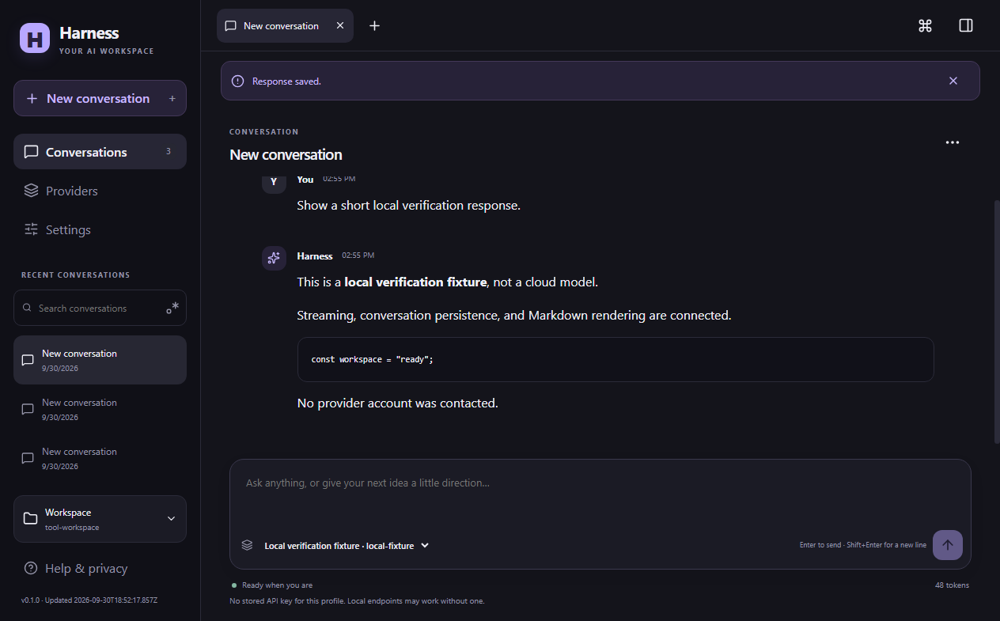
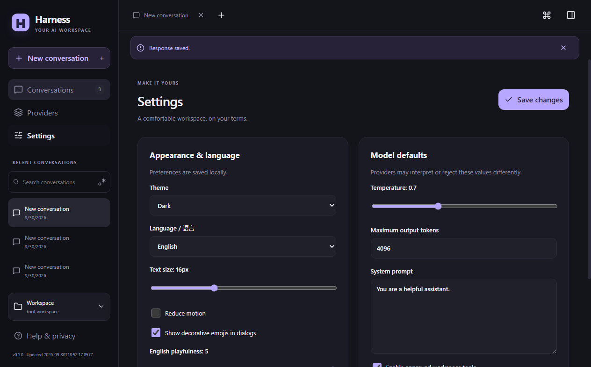
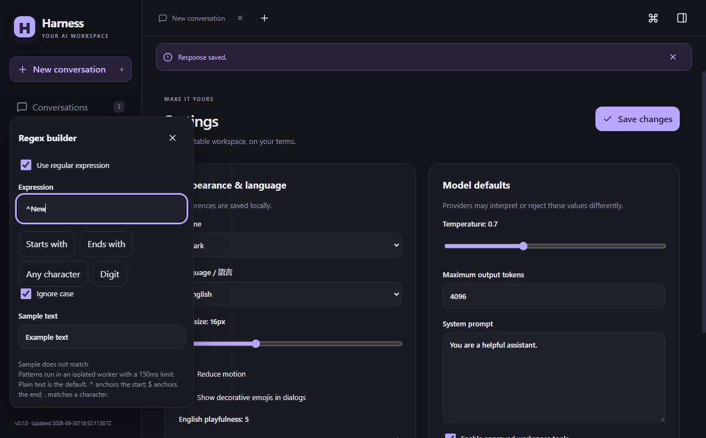

Reviewed visual evidence
Harness evidence gallery
Three original captures from a packaged Harness build, recorded with local fixture data. Each image is paired with its exact screen state and downloadable source file.
Captures
-

Conversation · completed local fixture
Dark theme · 1264 × 785 · scale 1
Open or download the original PNG -

-

Search · regular expression builder open
Dark theme · 1264 × 785 · scale 1
Open or download the original PNG


Provenance
All three PNG files are unchanged from the reviewed capture inventory. The images show local fixture content only; no provider account was contacted.
- Capture source commit
c028c39eb07c55d84dcac937d438a05073d42c46- Packaged executable SHA-256
efd01ac3a348b9fb17f992a1627a0f3ec9646b60d100b73fbabf8693901d0b39- Capture time
- 2026-09-30, 18:55 UTC; individual timestamps are in the manifest.
- Manifest
- Download the reviewed JSON inventory
Scope and limitations
This evidence covers three displayed states only. It does not establish live provider compatibility, installer or update execution, exhaustive accessibility, or completion of the broader product roadmap.
This is a static evidence gallery, not a complete application surface. Full page conformance is not claimed. See the evidence record for the scope and publication limitations.
The packaged runtime came from commit c028c39eb07c55d84dcac937d438a05073d42c46. Later documentation commits did not change that packaged runtime.